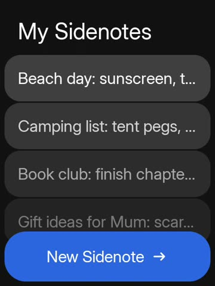

Add one email account with your provider’s incoming (IMAP) and outgoing (SMTP) server details. For Gmail, iCloud or Outlook, create an app password in your account’s security settings first.
Mail › Options › AccountSidekit 1.0 for Sidephone
Your Sidephone, finally at home.
One install puts the launcher and all 24 apps on your phone, built for the keypad. This guide takes about ten minutes.
10 minfrom download to home screen
24 appsin one download
Android 12+runs on the Sidephone’s own OS
Setup
Six steps to a phone that feels like yours.
Open a step, follow it on your phone, then mark it done. Your progress is saved in this browser.
0 of 6 done
-
Sidekit needs Android 12 or later. To check, open Settings › About phone › Android version.
- About 50 MB of free storage.
- Battery above 30%, or the phone on its charger.
- A USB‑C cable, only if you plan to install from a computer.
Your existing apps, contacts and texts stay where they are. Sidekit is added alongside them, and you can switch back at any time.
-
Sidekit comes as an APK, the file Android uses to install apps from outside the Play Store. On your Sidephone, open this page and download it:
- Tap Download Sidekit below. It opens the latest release.
- Scroll to Assets and tap the file ending in .apk.
- If the browser warns that the file might be harmful, tap Download anyway. It saves to Files › Downloads.
For developers: build it yourself
From a clone of the repository:
./gradlew :app:assembleDebugThe APK is written to
app/build/outputs/apk/debug/app-debug.apk. -
- Open Files › Downloads and choose the Sidekit APK.
- If Android asks, choose Settings and turn on Allow from this source for your Files or browser app.
- Go back and choose Install. When it finishes, choose Done.
- On your computer, install Google’s SDK Platform-Tools, which include
adb. Download the APK to the computer too. - On the phone, open Settings › About phone and tap Build number seven times to turn on Developer options.
- Open Settings › System › Developer options and turn on USB debugging.
- Connect the cable. On the phone, tap Allow when it asks to allow USB debugging.
- Open a terminal in your Downloads folder and run this, using your APK’s file name:
$ adb install -r Sidekit.apkSuccess in the terminal means it’s installed. You can turn USB debugging off again afterwards.
-
- Go to the home screen. Android asks which Home app to use.
- Choose Sidekit, then Always.
No prompt? Open Sidekit, then Settings › Home app. It shows Choose until Sidekit is your Home app, and Sidekit once it is. You can also use Settings › Apps › Default apps › Home app in Android.
Your four favourite apps sit in the blue dock at the bottom. Scroll the grid for the rest.
-
Out of the box, the Sidephone’s top-left key opens the dialer. Sidekit can turn it into a Back key that works in every app. Holding it still opens the dialer.
- In Sidekit, open Settings › Keypad Back key.
- In the Accessibility list, choose SideKit keypad and turn it on.
- Confirm with Allow. Back in Sidekit, the row now reads Enabled.
What it can see: only that one key. It doesn’t read the screen or anything you type.
-
- Open Sidemessage from the dock and allow access to your texts.
- Choose Make default, then confirm Sidemessage in Android’s prompt.
Without this, reading and sending still work, but new texts go to your old app first. Picture messages also need mobile data turned on.
Other apps ask for access the first time you open them: Photos for your pictures, Camera for the camera, Phonebook for contacts, Maps and Sideweather for your location. Each app explains what it needs.
Optional: connect your accounts
Every app works without an account. Add these only if you want them.
Banking
See your Up balances and transactions, read-only. Paste a personal access token from Up.
Banking › Options › Up · read-onlySideport
Open other Android apps in Sidekit’s design. Turn on Projection, and Chats & media for their messages.
Sideport › ProjectionThe keypad
Built for keys, not glass.
Sidekit puts the keypad first. Big targets, a two-button action bar, and typing that never covers the screen.
Typing that finishes words
Press a key until you reach your letter, on the T9 or mini QWERTY keypad. Word suggestions appear in the action bar: pick one with the D-pad and OK.
Options on the right
The top-right key opens each app’s options, like Make default in Sidemessage or Account in Mail.
Back is one press
With step 5 done, the top-left key goes back from anywhere, even outside Sidekit.
What you get
24 apps, already on the home screen.
Choose an app to see it running on a Sidephone.

Help
If something doesn’t look right.
“App not installed” appears during install
An older Sidekit signed with a different key is probably on the phone. Uninstall it from Settings › Apps › Sidekit, then install again.
If you used a computer, adb install -r shows the exact reason in the terminal.
Home still opens my old launcher
Android remembers your earlier choice. Open Settings › Apps › Default apps › Home app and choose Sidekit.
The top-left key still opens the dialer
The keypad service is off. Open Settings › Accessibility › SideKit keypad and turn it on. Android sometimes turns accessibility services off after an update. If so, turn it back on.
New texts don’t show up in Sidemessage
Sidemessage only receives texts directly when it’s the default SMS app. Open Sidemessage, choose Options › Make default, and confirm.
Picture messages also need mobile data and a SIM your carrier has set up for MMS. A picture message that failed to download shows Tap to retry.
How do I go back to my old home screen?
Choose your old launcher in Settings › Apps › Default apps › Home app. To remove Sidekit completely, uninstall it from Settings › Apps › Sidekit. Your contacts and texts stay on the phone.